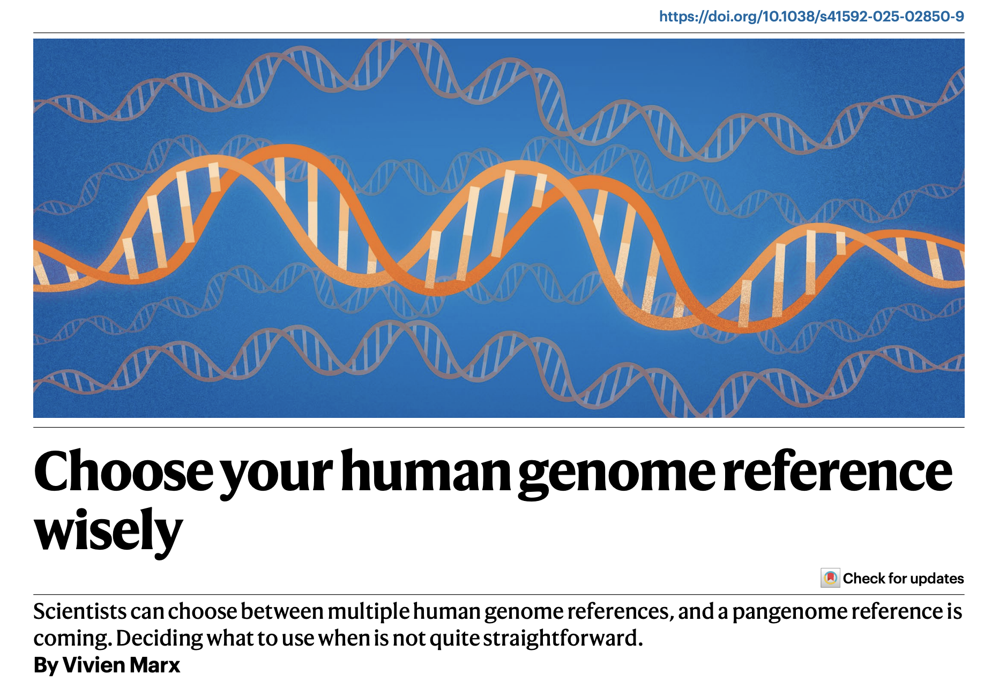
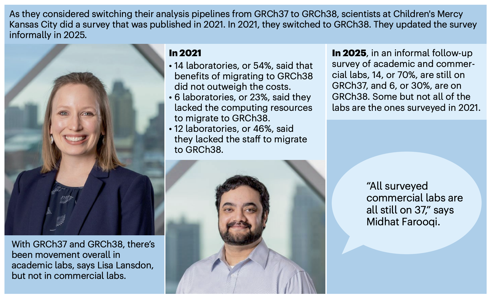

Use case VI: Analysis Mouse data (e.g. mm10)#
https://www.ncbi.nlm.nih.gov/sra?linkname=bioproject_sra_all&from_uid=726033 https://www.nature.com/articles/s41586-025-08625-8
{kind=link}

In this report, the researchers note that the overwhelming majority of clinical testing laboratories still rely on GRCh37. The primary obstacle to updating is a shortage of technical personnel with the requisite expertise, making the perceived cost of migration outweigh the benefits. ClinDet effectively addresses this challenge. Therefore, in this case study, we demonstrate how to use ClinDet to seamlessly switch the analytical genome reference to hg38.
{kind=link}

Let’s begin this section:
Download required files#
The required files listed below can be downloaded manually. Alternatively, to simplify this tedious configuration, ClinDet offers the download_hg38.shscript for automated downloading, which is customizable to meet user requirements.
genome fasta, dict, annotation GTF
DBSNP, ASCAT loci, allele files.
config files for hmftools, GATK tools.
config files for Sanger tools (CaVEMan, BRASS, cgppindel).
modify YAML file#
if you are not familiarity with yaml format, see ((en)[https://yaml.org/], (zh)[https://www.runoob.com/w3cnote/yaml-intro.html])
modify config.yaml for mutation detection#
add hg38 config files to config['resource'] section
hg38:
REFFA: "/AbsoPath/of/clindet/folder/resources/ref_genome/b37/Homo_sapiens.GRCh37.GATK.illumina.fasta"
GENOME_BED: ""
GTF: "/AbsoPath/of/clindet/folder/resources/ref_genome/b37/Homo_sapiens.GRCh37.87.gtf"
WES_PON: "/AbsoPath/of/clindet/folder/resources/ref_genome/b37/Mutect2-exome-panel.vcf"
WES_BED:
WGS_PON: "/AbsoPath/of/clindet/folder/resources/ref_genome/b37/Mutect2-WGS-panel-b37.vcf"
DBSNP: "/AbsoPath/of/clindet/folder/resources/ref_genome/b37/Homo_sapiens_assembly19.dbsnp138.vcf"
DBSNP_GZ: "/AbsoPath/of/clindet/folder/resources/ref_genome/b37/Homo_sapiens_assembly19.dbsnp138.vcf.gz"
DBSNP_INDEL: "/AbsoPath/of/clindet/folder/resources/ref_genome/b37/dbsnp_138_indel.b37.vcf.gz"
MUTECT2_VCF: "/AbsoPath/of/clindet/folder/resources/ref_genome/b37/af-only-gnomad.raw.sites.vcf"
REFFA_DICT: "/AbsoPath/of/clindet/folder/resources/ref_genome/b37/Homo_sapiens.GRCh37.GATK.illumina.fasta"
MUTECT2_germline_vcf: "/AbsoPath/of/clindet/folder/resources/ref_genome/b37/af-only-gnomad.raw.sites.vcf"
common_vcf: "/AbsoPath/of/clindet/folder/resources/ref_genome/b37/00-common_all_hg19.vcf.gz"
RNA_EDIT_VCF: "/AbsoPath/of/clindet/folder/resources/ref_genome/b37/b37.RNAediting.vcf.gz"
add hg38 config files to config['resource']['varanno'] section
b37:
KNOWN_SITES1: "/AbsoPath/of/clindet/folder/resources/ref_genome/b37/1000G_phase1.snps.high_confidence.b37.vcf.gz"
KNOWN_SITES2: "/AbsoPath/of/clindet/folder/resources/ref_genome/b37/1000G_phase1.indels.b37.vcf.gz"
add hg38 config config['singularity']['cgppindel'] section
hg38:
species: "HUMAN"
genes: "/AbsoPath/of/clindet/folder/resources/ref_genome/b37/Sanger/refarea_pindel/codingexon_regions.indel.bed.gz"
softfil: "/AbsoPath/of/clindet/folder/resources/ref_genome/b37/Sanger/SNV_INDEL_ref/pindel/WXS_Rules.lst"
simrep: "/AbsoPath/of/clindet/folder/resources/ref_genome/b37/Sanger/SNV_INDEL_ref/pindel/simpleRepeats.bed.gz"
normal_panel: "/AbsoPath/of/clindet/folder/resources/ref_genome/b37/Sanger/SNV_INDEL_ref/pindel/pindel_np.gff3.gz"
WES:
filter: "/AbsoPath/of/clindet/folder/resources/ref_genome/b37/Sanger/SNV_INDEL_ref/pindel/WXS_Rules.lst"
normal_panel: "/AbsoPath/of/clindet/folder/resources/ref_genome/b37/Sanger/SNV_INDEL_ref/pindel/pindel_np.gff3.gz"
WGS:
filter: "/AbsoPath/of/clindet/folder/resources/ref_genome/b37/Sanger/SNV_INDEL_ref/pindel/WGS_Rules.lst"
normal_panel: "/AbsoPath/of/clindet/folder/resources/ref_genome/b37/Sanger/SNV_INDEL_ref/pindel/pindel_np.gff3.gz"
add hg38 config config['singularity']['caveman'] section
hg38:
ignorebed: "/AbsoPath/of/clindet/folder/resources/ref_genome/b37/Sanger/cgpCaVEManWrapper_CPBI_refarea/hi_seq_depth.bed"
flag:
c: "/AbsoPath/of/clindet/folder/resources/ref_genome/b37/Sanger/SNV_INDEL_ref/caveman/flagging/flag.vcf.config.ini"
v: "/AbsoPath/of/clindet/folder/resources/ref_genome/b37/Sanger/SNV_INDEL_ref/caveman/flagging/flag.to.vcf.convert.ini"
u: "/AbsoPath/of/clindet/folder/resources/ref_genome/b37/Sanger/SNV_INDEL_ref/caveman/flagging"
g: "/AbsoPath/of/clindet/folder/resources/ref_genome/b37/Sanger/SNV_INDEL_ref/caveman/unmatchedNormal.bed.gz"
b: "/AbsoPath/of/clindet/folder/resources/ref_genome/b37/Sanger/SNV_INDEL_ref/caveman/flagging"
ab: "/AbsoPath/of/clindet/folder/resources/ref_genome/b37/Sanger/SNV_INDEL_ref/caveman/flagging"
s: "HUMAN"
add hg38 config config['softwares']['vcf2maf']['build_version'] and config['softwares']['vcf2maf']['vep'] section
build_version:
hg38: "GRCh38"
vep:
hg38:
vep_data: "/AbsoPath/of/clindet/folder/resources/ref_genome/b37/vep"
vep_path: "/public/home/lijf/env/miniconda3/envs/vep105/bin"
cache_version: "110"
species: "homo_sapiens"
modify config.yaml for CNV detection#
add hg38 config config['softwares']['sequenza'] section
hg38:
gc: /AbsoPath/of/clindet/folder/project_pipeline/WGS/MMWGSPE300_RJ/hg19/genome/hg19_gc50.wig.gz
add hg38 config config['softwares']['ascat'] section
hg38:
loci_1000: "/AbsoPath/of/clindet/folder/resources/ref_genome/b37/ASCAT/WES/G1000_lociAll_hg19/G1000_loci_hg19_chr"
alleles_1000: "/AbsoPath/of/clindet/folder/resources/ref_genome/b37/ASCAT/WES/G1000_allelesAll_hg19/G1000_alleles_hg19_chr"
replictimingfile: "/AbsoPath/of/clindet/folder/resources/ref_genome/b37/ASCAT/WES/RT_G1000_hg19.txt"
GCcontentfile: "/AbsoPath/of/clindet/folder/resources/ref_genome/b37/ASCAT/WES/GC_G1000_hg19.txt"
add hg38 config config['singularity']['freec'] section
hg38:
chrFiles: "/AbsoPath/of/clindet/folder/resources/ref_genome/b37/fasta"
chrLenFile: "/AbsoPath/of/clindet/folder/resources/ref_genome/b37/Homo_sapiens.GRCh37.GATK.illumina.fasta.auto.fai"
snp_file: "/AbsoPath/of/clindet/folder/resources/ref_genome/b37/hapmap_3.3.b37.vcf.gz"
sambamba: '/AbsoPath/of/conda/envs/freec/bin/sambamba'
bedtools: '/AbsoPath/of/conda/envs/freec/bin/bedtools'
modify config.yaml for SV detection#
add hg38 config config['singularity']['brass'] section
hg38:
gc: "/AbsoPath/of/clindet/folder/resources/ref_genome/b37/Sanger/VAGrENT_ref_GRCh37d5_ensembl_75/vagrent/vagrent.cache.gz"
b: "/AbsoPath/of/clindet/folder/resources/ref_genome/b37/Sanger/CNV_SV_ref/brass/500bp_windows.gc.bed.gz"
d: "/AbsoPath/of/clindet/folder/resources/ref_genome/b37/Sanger/CNV_SV_ref/brass/HiDepth.bed.gz"
cb: "/AbsoPath/of/clindet/folder/resources/ref_genome/b37/Sanger/CNV_SV_ref/brass/cytoband.txt"
ct: "/AbsoPath/of/clindet/folder/resources/ref_genome/b37/Sanger/CNV_SV_ref/brass/CentTelo.tsv"
vi: "/AbsoPath/of/clindet/folder/resources/ref_genome/b37/Sanger/CNV_SV_ref/brass/viral.genomic.fa.2bit"
mi: "/AbsoPath/of/clindet/folder/resources/ref_genome/b37/CNV_SV_ref/brass/all_ncbi_bacteria"
modify config.yaml for RNA expression#
add hg38 config config['softwares']['star']['index']
hg38: "/AbsoPath/of/clindet/folder/resources/ref_genome/b37/STAR/b37"
and config['softwares']['salmon']['index'] section
hg38: "/AbsoPath/of/clindet/folder/resources/ref_genome/b37/salmon/b37"
and config['softwares']['kallisto']['index'] section
hg38: "/AbsoPath/of/clindet/folder/resources/ref_genome/b37/salmon/b37"
and config['softwares']['rsem']['index'] section
hg38: "/AbsoPath/of/clindet/folder/resources/ref_genome/b37/RSEM/b37"
modify config.yaml for all HMFtools#
add hg38 config[‘singularity’][‘hmftools’]
b37:
# AMBER
heterozygous_sites: '/AbsoPath/of/clindet/folder/resources/ref_genome/b37/hmf_pipeline_resources/dna/copy_number/AmberGermlineSites.37.tsv.gz'
# COBALT
gc_profile: '/AbsoPath/of/clindet/folder/resources/ref_genome/b37/hmf_pipeline_resources/dna/copy_number/GC_profile.1000bp.37.cnp'
diploid_bed: '/AbsoPath/of/clindet/folder/resources/ref_genome/b37/hmf_pipeline_resources/dna/copy_number/DiploidRegions.37.bed.gz'
# CUPPA
cuppa_alt_sj: '/AbsoPath/of/clindet/folder/resources/ref_genome/b37/hmf_pipeline_resources/misc/cuppa/alt_sj.selected_loci.37.tsv.gz'
cuppa_classifier: '/AbsoPath/of/clindet/folder/resources/ref_genome/b37/hmf_pipeline_resources/misc/cuppa/cuppa_classifier.37.pickle.gz'
# SV Prep
sv_prep_blocklist: '/AbsoPath/of/clindet/folder/resources/ref_genome/b37/hmf_pipeline_resources/dna/sv/sv_prep_blacklist.37.bed'
# ESVEE
decoy_sequences_image: '/AbsoPath/of/clindet/folder/resources/ref_genome/b37/hmf_pipeline_resources/dna/sv/hg38_decoys.fa.img'
gridss_pon_breakends: '/AbsoPath/of/clindet/folder/resources/ref_genome/b37/hmf_pipeline_resources/dna/sv/sgl_pon.37.bed.gz'
gridss_pon_breakpoints: '/AbsoPath/of/clindet/folder/resources/ref_genome/b37/hmf_pipeline_resources/dna/sv/sv_pon.37.bedpe.gz'
repeatmasker_annotations: '/AbsoPath/of/clindet/folder/resources/ref_genome/b37/hmf_pipeline_resources/dna/sv/repeat_mask_data.37.fa.gz'
# Isofox
alt_sj_distribution: '/AbsoPath/of/clindet/folder/resources/ref_genome/b37/hmf_pipeline_resources/rna/isofox.hmf_3444.alt_sj_cohort.37.csv'
gene_exp_distribution: '/AbsoPath/of/clindet/folder/resources/ref_genome/b37/hmf_pipeline_resources/rna/isofox.hmf_3444.gene_distribution.37.csv'
isofox_counts: '/AbsoPath/of/clindet/folder/resources/ref_genome/b37/hmf_pipeline_resources/rna/read_151_exp_counts.37.csv'
isofox_gc_ratios: '/AbsoPath/of/clindet/folder/resources/ref_genome/b37/hmf_pipeline_resources/rna/read_100_exp_gc_ratios.37.csv'
# LILAC
lilac_resources: '/AbsoPath/of/clindet/folder/resources/ref_genome/b37/hmf_pipeline_resources/misc/lilac/'
# Neo
neo_resources: '/AbsoPath/of/clindet/folder/resources/ref_genome/b37/hmf_pipeline_resources/misc/neo/binding/'
cohort_tpm_medians: '/AbsoPath/of/clindet/folder/resources/ref_genome/b37/hmf_pipeline_resources/misc/neo/tpm_cohort/isofox.hmf_3444.transcript_medians.37.csv'
# CIDER
cider_blastdb: '/AbsoPath/of/clindet/folder/resources/ref_genome/b37/hmf_pipeline_resources/misc/cider/blastdb/'
# PEACH
peach_haplotypes: '/AbsoPath/of/clindet/folder/resources/ref_genome/b37/hmf_pipeline_resources/misc/peach/haplotypes.37.tsv'
peach_haplotype_functions: '/AbsoPath/of/clindet/folder/resources/ref_genome/b37/hmf_pipeline_resources/misc/peach/haplotype_functions.37.tsv'
peach_drug_info: '/AbsoPath/of/clindet/folder/resources/ref_genome/b37/hmf_pipeline_resources/misc/peach/peach_drugs.37.tsv'
# ORANGE
cohort_mapping: '/AbsoPath/of/clindet/folder/resources/ref_genome/b37/hmf_pipeline_resources/misc/orange/cohort_mapping.tsv'
cohort_percentiles: '/AbsoPath/of/clindet/folder/resources/ref_genome/b37/hmf_pipeline_resources/misc/orange/cohort_percentiles.tsv'
disease_ontology: '/AbsoPath/of/clindet/folder/resources/ref_genome/b37/hmf_pipeline_resources/misc/orange/doid.json'
# SAGE
clinvar_annotations: '/AbsoPath/of/clindet/folder/resources/ref_genome/b37/hmf_pipeline_resources/dna/variants/clinvar.37.vcf.gz'
sage_blocklist_regions: '/AbsoPath/of/clindet/folder/resources/ref_genome/b37/hmf_pipeline_resources/dna/variants/KnownBlacklist.germline.37.bed'
sage_blocklist_sites: '/AbsoPath/of/clindet/folder/resources/ref_genome/b37/hmf_pipeline_resources/dna/variants/KnownBlacklist.germline.37.vcf.gz'
sage_actionable_panel: '/AbsoPath/of/clindet/folder/resources/ref_genome/b37/hmf_pipeline_resources/dna/variants/ActionableCodingPanel.37.bed.gz'
sage_coverage_panel: '/AbsoPath/of/clindet/folder/resources/ref_genome/b37/hmf_pipeline_resources/dna/variants/CoverageCodingPanel.37.bed.gz'
sage_highconf_regions: '/AbsoPath/of/clindet/folder/resources/ref_genome/b37/hmf_pipeline_resources/dna/variants/NA12878_GIAB_highconf_IllFB-IllGATKHC-CG-Ion-Solid_ALLCHROM_v3.2.2_highconf.bed.gz'
sage_known_hotspots_germline: '/AbsoPath/of/clindet/folder/resources/ref_genome/b37/hmf_pipeline_resources/dna/variants/KnownHotspots.germline.37.vcf.gz'
sage_known_hotspots_somatic: '/AbsoPath/of/clindet/folder/resources/ref_genome/b37/hmf_pipeline_resources/dna/variants/KnownHotspots.somatic.37.vcf.gz'
sage_pon: '/AbsoPath/of/clindet/folder/resources/ref_genome/b37/hmf_pipeline_resources/dna/variants/SageGermlinePon.1000x.37.tsv.gz'
# Sigs
sigs_signatures: '/AbsoPath/of/clindet/folder/resources/ref_genome/b37/hmf_pipeline_resources/misc/sigs/snv_cosmic_signatures.csv'
sigs_etiology: '/AbsoPath/of/clindet/folder/resources/ref_genome/b37/hmf_pipeline_resources/misc/sigs/signatures_etiology.tsv'
# Virus breakend
virusbreakend_db: '/AbsoPath/of/clindet/folder/resources/ref_genome/b37/hmf_pipeline_resources/misc/virusbreakend/'
# Virus Interpreter
virus_reporting_db: '/AbsoPath/of/clindet/folder/resources/ref_genome/b37/hmf_pipeline_resources/misc/virusinterpreter/virus_reporting_db.tsv'
virus_taxonomy_db: '/AbsoPath/of/clindet/folder/resources/ref_genome/b37/hmf_pipeline_resources/misc/virusinterpreter/taxonomy_db.tsv'
virus_blocklist_db: '/AbsoPath/of/clindet/folder/resources/ref_genome/b37/hmf_pipeline_resources/misc/virusinterpreter/virus_blacklisting_db.tsv'
# Misc
driver_gene_panel: '/AbsoPath/of/clindet/folder/resources/ref_genome/b37/hmf_pipeline_resources/common/DriverGenePanel.37.tsv'
ensembl_data_resources: '/AbsoPath/of/clindet/folder/resources/ref_genome/b37/hmf_pipeline_resources/common/ensembl_data/'
unmap_regions: '/AbsoPath/of/clindet/folder/resources/ref_genome/b37/hmf_pipeline_resources/common/unmap_regions.37.tsv'
gnomad_resource: '/AbsoPath/of/clindet/folder/resources/ref_genome/b37/hmf_pipeline_resources/dna/variants/gnomad_variants_v37.csv.gz'
gridss_config: '/AbsoPath/of/clindet/folder/resources/ref_genome/b37/hmf_pipeline_resources/dna/sv/gridss.properties'
known_fusion_data: '/AbsoPath/of/clindet/folder/resources/ref_genome/b37/hmf_pipeline_resources/dna/sv/known_fusion_data.37.csv'
known_fusions: '/AbsoPath/of/clindet/folder/resources/ref_genome/b37/hmf_pipeline_resources/dna/sv/known_fusions.37.bedpe'
msi_jitter_sites: '/AbsoPath/of/clindet/folder/resources/ref_genome/b37/hmf_pipeline_resources/dna/variants/msi_jitter_sites.37.tsv.gz'
purple_germline_del: '/AbsoPath/of/clindet/folder/resources/ref_genome/b37/hmf_pipeline_resources/dna/copy_number/cohort_germline_del_freq.37.csv'
segment_mappability: '/AbsoPath/of/clindet/folder/resources/ref_genome/b37/hmf_pipeline_resources/dna/variants/mappability_150.37.bed.gz'
# tool spec config
amber:
loci: "/AbsoPath/of/clindet/folder/resources/ref_genome/b37//hmf_pipeline_resources/GermlineHetPon.37.vcf.gz"
snp_check_vcf: '/AbsoPath/of/clindet/folder/resources/ref_genome/b37/hmf_pipeline_resources/Amber.snpcheck.37.vcf'
cobalt:
ref_genome_version: 37
tumor_only_diploid_bed: "/AbsoPath/of/clindet/folder/resources/ref_genome/b37/hmf_pipeline_resources/dna/copy_number/DiploidRegions.37.bed.gz"
gc_profile: "/AbsoPath/of/clindet/folder/resources/ref_genome/b37/hmf_pipeline_resources/dna/copy_number/GC_profile.1000bp.37.cnp"
purple:
ref_genome_version: 37
tumor_only_diploid_bed: "/AbsoPath/of/clindet/folder/resources/ref_genome/b37/hmf_pipeline_resources/dna/copy_number/DiploidRegions.37.bed.gz"
gc_profile: "/AbsoPath/of/clindet/folder/resources/ref_genome/b37/hmf_pipeline_resources/dna/copy_number/GC_profile.1000bp.37.cnp"
ensembl_data_dir: "/AbsoPath/of/clindet/folder/resources/ref_genome/b37/hmf_pipeline_resources/common/ensembl_data"
somatic_hotspots: "/AbsoPath/of/clindet/folder/resources/ref_genome/b37/hmf_pipeline_resources/dna/variants/KnownHotspots.somatic.37.vcf.gz"
driver_gene_panel: "/AbsoPath/of/clindet/folder/resources/ref_genome/b37/hmf_pipeline_resources/common/DriverGenePanel.37.tsv"
linx:
ref_genome_version: 37
tumor_only_diploid_bed: "/AbsoPath/of/clindet/folder/resources/ref_genome/b37/hmf_pipeline_resources/dna/copy_number/DiploidRegions.37.bed.gz"
gc_profile: "/AbsoPath/of/clindet/folder/resources/ref_genome/b37/hmf_pipeline_resources/dna/copy_number/GC_profile.1000bp.37.cnp"
ensembl_data_dir: "/AbsoPath/of/clindet/folder/resources/ref_genome/b37/hmf_pipeline_resources/common/ensembl_data"
somatic_hotspots: "/AbsoPath/of/clindet/folder/resources/ref_genome/b37/hmf_pipeline_resources/dna/variants/KnownHotspots.somatic.37.vcf.gz"
driver_gene_panel: "/AbsoPath/of/clindet/folder/resources/ref_genome/b37/hmf_pipeline_resources/common/DriverGenePanel.37.tsv"
known_fusion_file: "/AbsoPath/of/clindet/folder/resources/ref_genome/b37/hmf_pipeline_resources/dna/sv/known_fusion_data.37.csv"
sage:
ref_genome_version: 37
ensembl_data_dir: "/AbsoPath/of/clindet/folder/resources/ref_genome/b37/hmf_pipeline_resources/common/ensembl_data"
coverage_bed: "/AbsoPath/of/clindet/folder/resources/ref_genome/b37/hmf_pipeline_resources/dna/variants/CoverageCodingPanel.37.bed.gz"
hotspots: "/AbsoPath/of/clindet/folder/resources/ref_genome/b37/hmf_pipeline_resources/dna/variants/KnownHotspots.somatic.37.vcf.gz "
panel_bed: "/AbsoPath/of/clindet/folder/resources/ref_genome/b37/hmf_pipeline_resources/dna/variants/ActionableCodingPanel.37.bed.gz"
high_confidence_bed: "/AbsoPath/of/clindet/folder/resources/ref_genome/b37/hmf_pipeline_resources/dna/variants/NA12878_GIAB_highconf_IllFB-IllGATKHC-CG-Ion-Solid_ALLCHROM_v3.2.2_highconf.bed.gz"
esvee:
ref_genome_version: 37
ensembl_data_dir: "/AbsoPath/of/clindet/folder/resources/ref_genome/b37/hmf_pipeline_resources/common/ensembl_data"
known_fusion_bed: "/AbsoPath/of/clindet/folder/resources/ref_genome/b37/hmf_pipeline_resources/dna/sv/known_fusions.37.bedpe"
blacklist: "/AbsoPath/of/clindet/folder/resources/ref_genome/b37/hmf_pipeline_resources/dna/sv/gridss_blacklist.37.bed.gz"